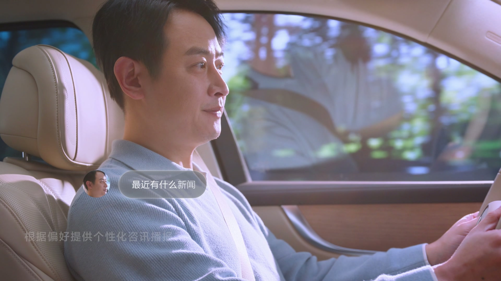

Concept direction for Huawei's HarmonyOS intelligent cockpit and DTOF parking system — where AI meets every seat, every voice, every obstacle.
A multimodal AI cockpit that recognizes every passenger by face and voice — personalizing content, audio zones, and ambient lighting per seat. Paired with a DTOF parking system that sees what no camera can: suspended pipes, sunken stairs, and obstacles invisible to traditional sensors.
"Most cars ask you to adapt to them. What if the car adapted to you — the moment you sat down?"
— Gordon Cheng, Creative DirectorHuawei's HarmonyOS cockpit had dozens of AI-powered features — face recognition, voice zones, memory-based personalization, ambient control. But advanced technology means nothing if users don't feel it. The challenge: how do you communicate invisible intelligence in a way that feels human, not robotic?
For DTOF parking: Huawei's Direct Time-of-Flight sensors could detect obstacles that traditional cameras and ultrasonics miss entirely — hanging pipes, negative-height curbs, suspended barriers. But no one had seen this capability demonstrated. The challenge: how do you make the invisible visible?
I directed two concept films that translated Huawei's engineering capabilities into emotionally legible stories — one for the cockpit experience (human warmth), one for DTOF parking (technical confidence).
The car identifies each passenger the moment they sit down. Seat position, mirror angle, climate, and content preferences load automatically.
The system learns your interests over time. Dad gets sports news. The car remembers — no setup, no asking.
Daughter says "Tuantuan" — the assistant recognizes her voice and face, recalls she was watching Peppa Pig last time, and asks if she'd like to continue.
Headrest-integrated speakers create personal sound zones. Navigation guides the driver while the child watches cartoons in back — no interference.
"Xiaoyi, turn the ceiling into stars." The child controls ambient lighting with natural language. The interior transforms into a planetarium.
"The best interface is one that disappears. When a 6-year-old can command the car with a sentence, the technology has become invisible."
— Gordon Cheng, on designing the child interaction scenarioDirect Time-of-Flight (dToF) sensors emit 940nm infrared laser pulses and use SPAD (Single Photon Avalanche Photodiode) pixels to measure distance with centimeter precision — detecting obstacles that cameras and ultrasonics fundamentally cannot. The Maextro S800 carries 4 proprietary 192-line LiDAR sensors plus dToF arrays, enabling what Huawei calls GOD (General Obstacle Detection) with 99.9% recognition rate.
3D bird's-eye view + rear camera + real-time obstacle overlay. The driver sees exactly what the car sees — with distance markers to the centimeter.
Rear-wheel steering enables the car to park in spaces other vehicles simply cannot fit. Fully automated — the driver watches from outside.
Sunken stairs, curb drop-offs, drainage ditches — obstacles defined by absence. DTOF detects changes in ground plane that cameras interpret as flat surface.
Hanging water pipes, gate arms, overhead barriers — above bumper height, invisible to traditional ultrasonic sensors. DTOF scans the full vertical plane.
Translated Huawei's engineering documentation into user-facing feature maps. Identified 12 cockpit features and 6 DTOF capabilities. Prioritized by emotional impact, not technical complexity.
Created character-driven scenarios: a father driving with his daughter. Every feature demonstrated through their interaction — the car becomes a character in a family story.
Storyboarded each UI moment: voice bubble positioning, face recognition feedback, parking UI transitions. Defined when the interface appears and — critically — when it stays invisible.
Directed two films: a 79-second cockpit narrative and nine DTOF capability demos. Managed the tension between engineering accuracy and emotional storytelling.
"Engineering teams build features. Storytelling makes people trust them. My job was the bridge."
— Gordon Cheng